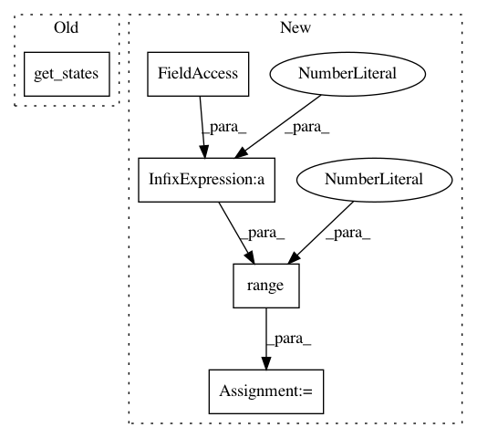

366eb0988cad154ad05d356b1ec950c8cb0206d6,paysage/fit.py,,persistent_contrastive_divergence,#Any#Any#Any#Any#,382
Before Change
sampler.update_negative_state(steps)
// compute the gradient
return model.gradient(*sampler.get_states())
// alias
pcd = persistent_contrastive_divergence
After Change
// compute the conditional sampling on all visible-side layers,
// inclusive over hidden-side layers
for i in range(1, model.num_layers - 1):
clamped_layers = list(range(i))
sampler.update_positive_state(steps, clamped=clamped_layers)
sampler.update_negative_state(steps, clamped=clamped_layers)
// make a mean field step to copmute the expectation on the last layer
clamped_layers = list(range(model.num_layers - 1))
grad_data_state = model.mean_field_iteration(1, sampler.pos_state, clamped=clamped_layers)
grad_model_state = model.mean_field_iteration(1, sampler.neg_state, clamped=clamped_layers)
In pattern: SUPERPATTERN
Frequency: 3
Non-data size: 5
Instances
Project Name: drckf/paysage
Commit Name: 366eb0988cad154ad05d356b1ec950c8cb0206d6
Time: 2017-05-04
Author: jrwalsh1@gmail.com
File Name: paysage/fit.py
Class Name:
Method Name: persistent_contrastive_divergence
Project Name: david-abel/simple_rl
Commit Name: 045c8484b4055197c5e789801e11f74340e9ab74
Time: 2018-09-04
Author: yagneshrevar@gmail.com
File Name: simple_rl/tasks/navigation/NavigationMDP.py
Class Name: NavigationMDP
Method Name: get_states
Project Name: drckf/paysage
Commit Name: 366eb0988cad154ad05d356b1ec950c8cb0206d6
Time: 2017-05-04
Author: jrwalsh1@gmail.com
File Name: paysage/fit.py
Class Name:
Method Name: contrastive_divergence